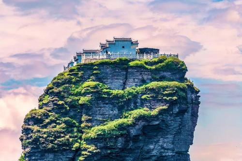

梵净山（Mount Fanjing），得名于“梵天净土”，位于贵州省铜仁市的印江、江口、松桃（西南部）3县交界，地处北纬27°49′50″—28°1′30″，东经 108°45′55″—108°48′30″，靠近印江县城、江口县东南部、松桃县西南部。系武陵山脉主峰，是中国的佛教道场和自然保护区，位于铜仁地区中部。 [1]
梵净山总面积为402.75平方千米，缓冲区面积372.39平方千米。 [2] 主要保护对象是以黔金丝猴（Rhinopithecus roxellanae brelichi）、珙桐（Davidia involucrate Baill）等为代表的珍稀野生动植物及原生森林生态系统。森林覆盖率95%，有植物2000余种，国家保护植物31种，动物801种，国家保护动物19种，被誉为“地球绿洲”、“动植物基因库“、人类的宝贵遗产”。 [3]
梵净山于2018年10月17日被评为国家AAAAA级旅游景区， [4] 国家级自然保护区， [5] 于2008年6月30日被评为中国十大避暑名山， [5] 中国著名的弥勒菩萨道场， [5] 国际“人与生物圈保护网”（MAB）成员， [5] 同时也是第42届世界遗产大会认定的世界自然遗产。 [6] 2018年7月2日，中国贵州省梵净山在巴林麦纳麦举行的世界遗产大会上获准列入世界自然遗产名录。
